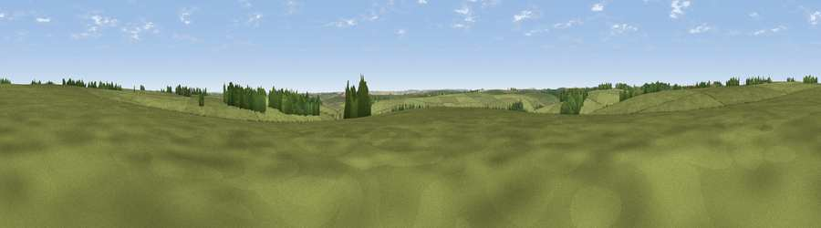

Rough Down
#40885 in England · top 85% of its area beats it · near ImberThe view, rendered

A 360° render of this exact spot computed from the terrain model, tree cover and land cover — summer colours, afternoon light, calibrated against photographs of famous viewpoints. Real trees, hedges and buildings will differ in detail.
The panorama
Grey silhouette: terrain skyline in each direction (720 bearings, Earth curvature and refraction included). Dashed green: skyline with trees (+15 m) and buildings (+8 m) as obstacles. Blue strip: how far the ground is visible on each bearing.
Where the view opens
Wedge length = distance to the farthest visible ground on that bearing (vegetation-aware). Rings at 10, 25 and 50 km.
What fills the view
89% grassland · 8% woodland · 2% cropland
Angular shares of the visible panorama (visual magnitude), not map area. Landscape diversity 0.18 (0–1 Shannon).
Key numbers
More beautiful places nearby
The staircase of upgrades: each row has a higher view potential than everything closer. Driving times are estimates from straight-line distance, calibrated against real road routing — check an actual route before setting out.
| Place | Direction | Drive | Score |
|---|---|---|---|
| Viewpoint near Erlestoke | NNW · 3 km | ~8 min | 60.3 |
| Stoke Hill | NNW · 3 km | ~8 min | 60.9 |
| Viewpoint near Edington | NW · 4 km | ~9 min | 65.4 |
| Viewpoint near Edington | NW · 5 km | ~11 min | 71.9 |
| Viewpoint near Bratton | WNW · 7 km | ~15 min | 73.2 |
| Cley Hill | WSW · 14 km | ~25 min | 76.8 |
| Martinsell viewpoint | NE · 25 km | ~41 min | 77.3 |
| Viewpoint near Berwick St John | S · 29 km | ~46 min | 78.2 |
51.24633, -2.04517 · source: osm peak · position refined by local search. Computed location — check access rights before visiting.